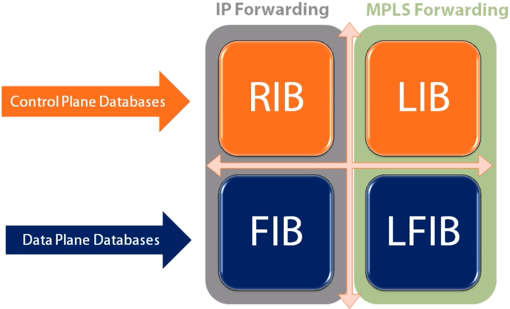
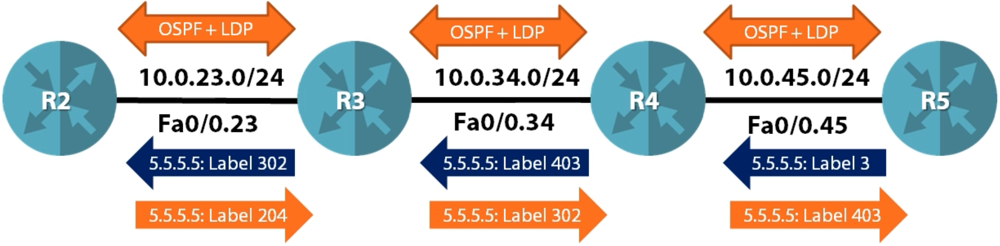

MPLS Fundamentals
MPLS Data Plane
LSR uses the FIB to forward unlabeled IP packets
LSR uses the LFIB to forward labeled packets
The FIB and LFIB databases are built by various control plane protocols
Key Router Databases
RIB (Routing Information Base) -
sh ip route- Routing table, static, connected, etc.FIB (Forwarding Information Base) -
sh ip cefworks with CEF (Cisco Express Forwarding) adjacency table (prepackaged L2 info used for forwarding - MAC Address, DLCI), what do we do when we have a packet, what database do we look in, etc.LIB (Label Information Base) -
sh mpls ldp bindings- Label Information Base (store anything to do with label)LFIB (Label Forward Information Base) -
sh mpls forwarding-table- hardware based database, used to forward MPLS packets constructed by LIB, FIB & RIB
MPLS Control Plan
Step 1 - Every LSR generates a local label for every connected, static and IGP prefix
Step 2 - Exchange prefix / label bindings with all LDP neighbors
Once labels are exchanged, the MPLS data plane (LFIB can be constructed).
Only the best prefix / label bindings from the LIB get put into LFIB
The best path is still chosen by the IGP
Label Distribution Protocol (LDP)
LDP Label Exchange
LDP Mechanics
LDP hello messages are multicast to 224.0.0.2 to discover LDP neighbors
UDP port 646
Hello messages list the LDP router-id. This MUST be a valid IP address!
TCP session is open between LDP routers to do label exchange
TCP port 646
TCP session is between LDP router-id’s - This is why they must be routable!
Highest LDP RID initiates TCP session
LDP RID is chosen first by configuration, then highest loopback, then highest interface IP assigned
Penultimate Hop Popping
LSR advertises a special label called implicit null (label value 3) for any prefixes that it needs to forward packets for using only (outside MPLS)
The implicit null label tells the upstream neighbor to pop the outer most label before sending the packet as an efficiency mechanism
MPLS Ping and Traceroute
MPLS Ping
Classic ping works fine in MPLS environments but has some challenges
Classic ping only verifies that IP forwarding is working, but does not verify the LSP
If an end to end ping fails, it can be unclear where the exact problem is (could be many things - firewall, CE, MPLS could be broken but not pings, etc.)
To solve these challenges, a special MPLS ping utility was developed
Can only be run on LSRs
Verifies an end to end LSP
IP packet that is carried across the LSP is constructed so it can NOT be routed
IP packet gets put inside LSP packet
TTL is 1
Destination is 127.0.0.0/8
Destination UDP is 3503 (reserved)
Rotuer alert is set in IP header
In MPLS header, TTL is set to 225
Lookup destination of ping, generate full label stack, and push label stack on packet
It won’t fallback to routing, because the parameters (TTL, port, etc.) won’t allow it to be routed
If the LSP is broken, an error message is returned to the source router
MPLS Classic Traceroute
Traditional traceroute in an MPLS environment works differently than you might imagine
It suffers from the same problems as ping and is not efficient
Let’s say CE1 is trying to trace to CE2:
CE1 sends packet with TTL 1
PE1 gets packet and decrements TTL to 0, sends ICMP TTL expired to CE1
CE1 knows first hop is PE1
CE1 sends packet with TTL 2
PE1 gets packet and decrements TTL to 1, puts label 17 on the stack, and sends to P1
TTL on MPLS header is set to 1
P1 gets MPLS packet and decrements TTL to 0 in MPLS header
(now normally, in classic traceroute, P1 would send TTL expired to CE1, P1 doesn’t know of IP realm and can’t send it back to 192.168.1.1)
P1 generates ICMP TTL expired message and sends along LSP to PE2 (bizarre) sourced from its interface facing PE1 and the TTL expired message is destined to CE1, puts label 32 and sends to PE2
TTL expired gets sent to CE2, CE2 sends it back to PE2
CE1 eventually gets the TTL expired message
Same thing happens for 3rd hop, etc.
Problems:
If LSP is broken, traceroute in MPLS might still work
If we trace from one CE1 to CE2, no way to detect where LSP broke, ICMP responses travel along LSP first and break by the PE1 router
MPLS traceroute utility was created and MPLS ping is used in the background and is run on LSR only
A series MPLS (ping) echo packets are sent fully labelled checking the entire path